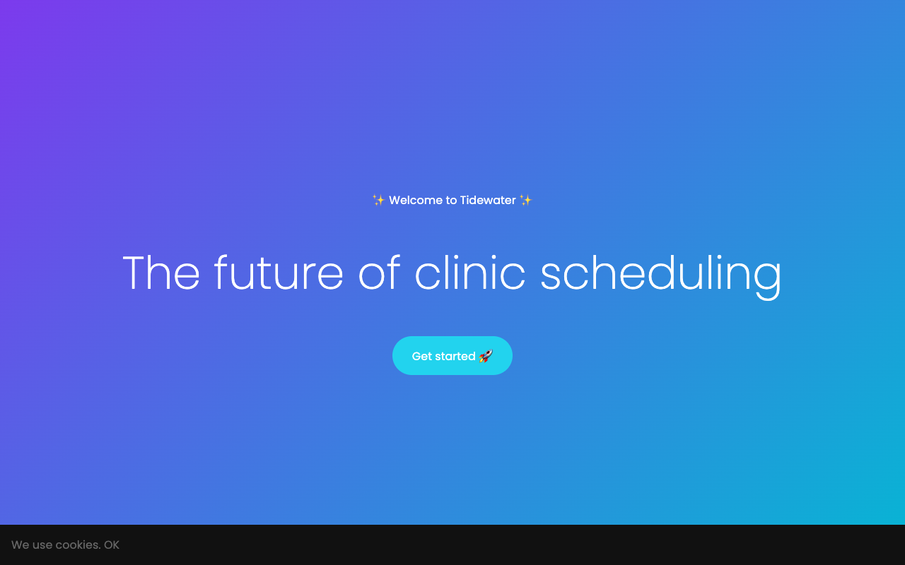
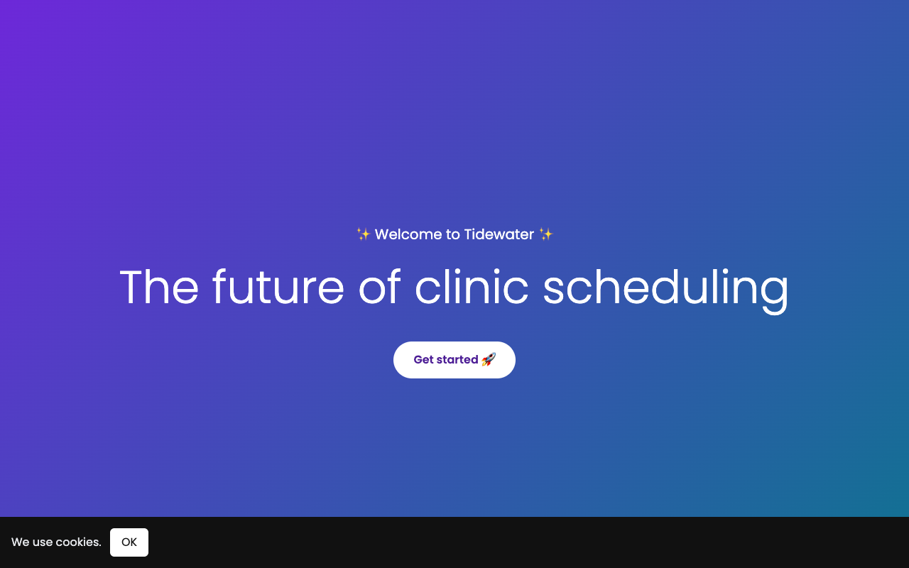

Output


Result
Audited landing.html with Lighthouse 12 (mobile preset, headless Chrome, served locally on :7001/:7002, 3 runs each) and fixed everything it flagged plus the obvious things it cannot see. Fixed page is landing.after.html (full file below).
Scores (median of 3), before -> after: Performance 81 -> 100, Accessibility 27 -> 100, SEO 80 -> 100, Best practices 92 -> 100. FCP 3.0 s -> 0.6 s, LCP 3.7 s -> 0.6 s, TBT 0 -> 0 (the 30M-iteration busy loop only costs ~30 ms here, but it blocks the main thread for that long on every load and far longer on a slow phone). Headless Chrome: load event 2,143 ms -> 513 ms, script time 28 ms -> 0.
Top issues found and fixed
Performance: (1) render-blocking font stylesheet requesting 2 families x 9 weights with display=block (invisible text until fonts arrive) -> one family, 3 weights, display=swap, loaded non-blocking with the print-media swap trick plus a noscript fallback and preconnects. This was the biggest FCP/LCP win: just adding swap and fewer weights still left FCP at 3.3 s; making the stylesheet non-blocking took it to 0.6 s. (2) jQuery + moment loaded from a CDN, blocking the parser; moment was never used and jQuery was only used for one innerHTML -> both removed, testimonials are now plain HTML (no 1.5 s timer, no layout shift, crawlable). (3) A 30M-iteration empty busy loop in a script tag -> deleted.
Accessibility (27 -> 100): missing lang, missing doctype (quirks mode), no <main> landmark; the fake heading <div class="h1"> and h3s directly under the h1 -> real p eyebrow + h2s; the "Get started" CTA was a div with onclick (not focusable, no link semantics) -> real <a href>; cookie "OK" span -> real <button>; emoji hidden from screen readers with aria-hidden; contrast fixed (#999 on white -> #374151; #666 on #111 -> #e5e7eb; white-on-cyan button -> white button with dark purple text; gradient end darkened from #06b6d4 to #0e7490 so white text passes); visible focus outlines.
SEO (80 -> 100): added <title>, meta description, meta viewport, lang. Also made the layout responsive (flex-wrap on cards, clamp() heading size, min-height instead of height:100vh).
What I did not change / caveats: the old robots.txt failure in my first run was an artifact of my local server returning HTML for every path, so I made the server 404 unknown paths. Lighthouse's lab numbers use simulated mobile throttling and vary +-5 points between runs, so the 3 runs for each version are in the steps. CLS rose from 0.001 to 0.005 because the web font now swaps in after first paint (still far below the 0.1 threshold). Fonts still come from Google; self-hosting a subset would remove that third-party request entirely. The page's /signup target doesn't exist in the fixture.
Terminal
# baseline audit
npx lighthouse http://localhost:7001/ --chrome-flags="--headless=new --no-sandbox" --only-categories=performance,accessibility,seo,best-practices --output=json # x3, page served by node serve.mjs landing.before.html 7001
before 1 perf 84 a11y 27 seo 80 bp 92 FCP 3.0 s LCP 3.7 s TBT 0 ms CLS 0.001
before 2 perf 78 a11y 27 seo 80 bp 92 FCP 3.7 s LCP 3.7 s TBT 0 ms CLS 0.001
before 3 perf 81 a11y 27 seo 80 bp 92 FCP 2.9 s LCP 4.1 s TBT 0 ms CLS 0.001
# the issue list that drove the fixes
node -e '... list audits with score < 0.9 from lh-before-1.json ...'
failing: first-contentful-paint 0.51, largest-contentful-paint 0.59, speed-index 0.88, color-contrast 0, document-title 0, heading-order 0, html-has-lang 0, landmark-one-main 0, unused-javascript 0, doctype 0, meta-description 0, errors-in-console 0 (favicon 404)
(insights) render-blocking requests, font display, LCP breakdown, network dependency tree, viewport
# second, independent measurement (not Lighthouse); includes the font-swap version
node shot.mjs # puppeteer-core + CDP Performance.getMetrics, load event timing, before vs after
before {"loadMs":2143,"taskDurationS":0.054,"scriptDurationS":0.028,"jsHeapMB":1.9,"nodes":161}
after {"loadMs":513,"taskDurationS":0.028,"scriptDurationS":0,"jsHeapMB":1.1,"nodes":108}
# a11y/SEO fixed, but performance barely moved: the font CSS is the bottleneck, not just the weights
npx lighthouse http://localhost:7002/ ... # first fix: fonts reduced + display=swap but stylesheet still render-blocking, x3
after 1 perf 84 a11y 100 seo 100 bp 96 FCP 3.3 s LCP 3.3 s TBT 0 ms CLS 0.005
after 2 perf 85 a11y 100 seo 100 bp 96 FCP 3.3 s LCP 3.3 s TBT 0 ms CLS 0.003
after 3 perf 84 a11y 100 seo 100 bp 96 FCP 3.3 s LCP 3.3 s TBT 0 ms CLS 0.005
# make the font stylesheet non-render-blocking
edit landing.after.html: font CSS -> media="print" onload="this.media='all'" + <noscript> fallback, add <link rel=icon href=data:,> (favicon 404 console error)
(edited)
# final numbers
npx lighthouse http://localhost:7002/ ... --output=json # x3 on the final page
after2 1 perf 100 a11y 100 seo 100 bp 100 FCP 0.7 s LCP 0.7 s TBT 0 ms CLS 0.005
after2 2 perf 100 a11y 100 seo 100 bp 100 FCP 0.6 s LCP 0.6 s TBT 0 ms CLS 0.005
after2 3 perf 100 a11y 100 seo 100 bp 100 FCP 0.6 s LCP 0.6 s TBT 0 ms CLS 0.005
# visual sanity check
(viewed landing-after.png at 1280x800)
Hero renders correctly: eyebrow, light-weight h1, white CTA pill, cookie bar with OK button; text legible on the gradient.
Files
landing.html (fixed)
<!doctype html> <html lang=class="s">"en"> <head> <meta charset=class="s">"utf-8"> <meta name=class="s">"viewport" content=class="s">"width=device-width, initial-scale=1"> <title>Tidewater – clinic scheduling software for physiotherapy clinics</title> <meta name=class="s">"description" content=class="s">"Tidewater is scheduling software for physiotherapy clinics: a smart calendar, automatic reminders that cut no-shows, and clear analytics."> <link rel=class="s">"preconnect" href=class="s">"https://fonts.googleapis.com"> <link rel=class="s">"preconnect" href=class="s">"https://fonts.gstatic.com" crossorigin> <link rel=class="s">"icon" href=class="s">"data:,"> <!-- one family, only the weights used, display=swap, and loaded without blocking first paint (print-media swap) --> <link rel=class="s">"stylesheet" href=class="s">"https://fonts.googleapis.com/css2?family=Poppins:wght@300;400;600&display=swap" media=class="s">"print" onload=class="s">"this.media='all'"> <noscript><link rel=class="s">"stylesheet" href=class="s">"https://fonts.googleapis.com/css2?family=Poppins:wght@300;400;600&display=swap"></noscript> <style> body{font-family:Poppins,system-ui,sans-serif;margin:0;color:#374151;background:#fff;line-height:1.5} .hero{min-height:100vh;background:linear-gradient(135deg,#6d28d9,#0e7490);color:#fff;display:flex;flex-direction:column;align-items:center;justify-content:center;text-align:center;padding:24px} .eyebrow{font-size:20px;margin:0} .hero h1{font-size:clamp(36px,8vw,64px);font-weight:300;margin:12px 0 28px} .btn{display:inline-block;background:#fff;color:#4c1d95;font-weight:600;text-decoration:none;padding:14px 28px;border-radius:30px} .btn:focus-visible,.banner button:focus-visible{outline:3px solid #fde047;outline-offset:3px} .features{display:flex;flex-wrap:wrap;gap:20px;padding:60px 24px} .card{flex:1 1 240px;padding:24px;box-shadow:0 10px 40px rgba(0,0,0,.2)} .testimonials{min-height:400px;padding:60px 24px} .banner{position:fixed;bottom:0;left:0;right:0;padding:16px;background:#111;color:#e5e7eb} .banner button{margin-left:8px;padding:8px 16px;border:0;border-radius:6px;background:#fff;color:#111;font:inherit;cursor:pointer} </style> </head> <body> <main> <section class=class="s">"hero"> <p class=class="s">"eyebrow"><span aria-hidden=class="s">"true">✨</span> Welcome to Tidewater <span aria-hidden=class="s">"true">✨</span></p> <h1>The future of clinic scheduling</h1> <a class=class="s">"btn" href=class="s">"/signup">Get started <span aria-hidden=class="s">"true">🚀</span></a> </section> <section class=class="s">"features" aria-label=class="s">"Features"> <div class=class="s">"card"><h2><span aria-hidden=class="s">"true">📅</span> Smart calendar</h2><p>Our AI-powered calendar revolutionizes how you schedule.</p></div> <div class=class="s">"card"><h2><span aria-hidden=class="s">"true">💬</span> Reminders</h2><p>Seamlessly reduce no-shows with cutting-edge reminders.</p></div> <div class=class="s">"card"><h2><span aria-hidden=class="s">"true">📊</span> Insights</h2><p>Unlock the power of your data with robust analytics.</p></div> </section> <!-- rendered in the HTML instead of injected by jQuery after 1.5s: no extra JS, no late layout shift, crawlable --> <section class=class="s">"testimonials"><h2>Loved by clinics</h2><p>class="s">"Tidewater changed everything." – A clinic</p></section> </main> <div class=class="s">"banner" role=class="s">"region" aria-label=class="s">"Cookie notice">We use cookies. <button type=class="s">"button" onclick=class="s">"this.parentNode.remove()">OK</button></div> </body> </html>